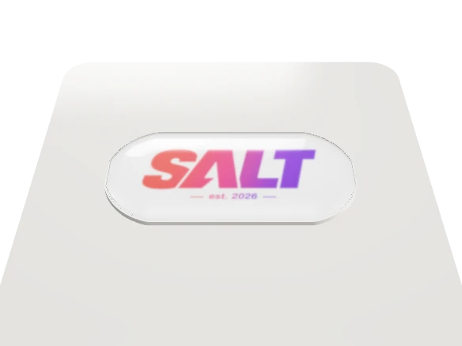
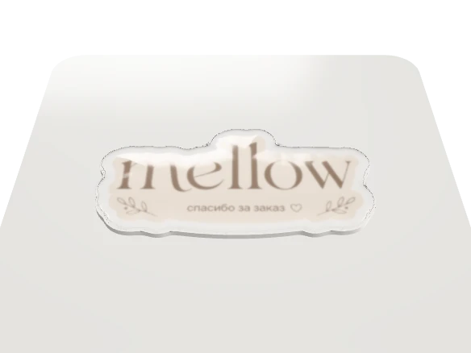
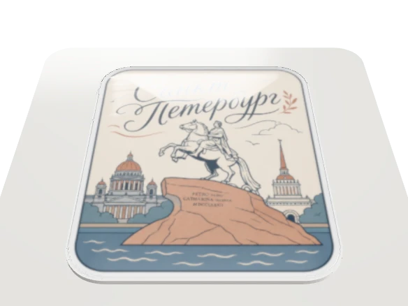
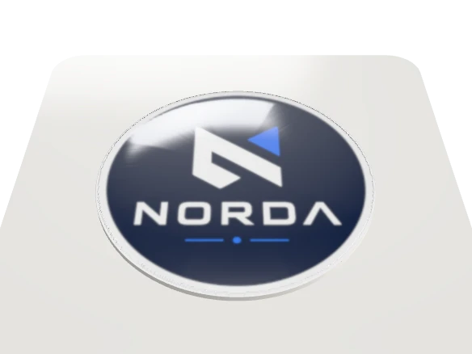
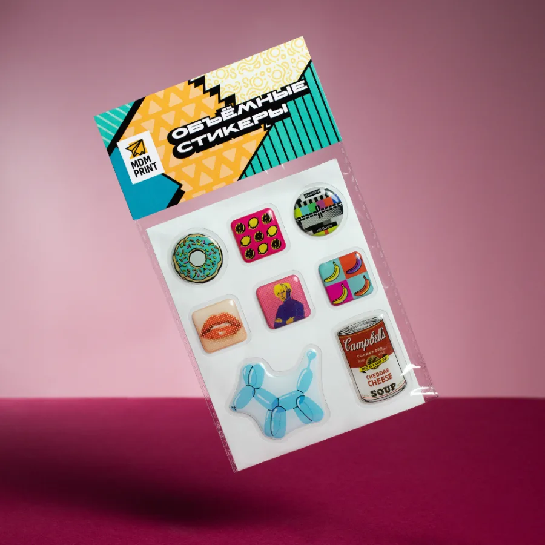

Круглый со свечением
Гейминг, техника, ночной мерч — светится в темноте.
3D-Стикеры со смолой для мерча, упаковки и брендинга — глянцевые, которые хочется потрогать.
Круглые, прямоугольные, пилюли и фигурная высечка по контуру. Покрытия: плёнка, голография, свечение в темноте, эпоксидная и полиуретановая смола.
Гейминг, техника, ночной мерч — светится в темноте.
Упаковка и коробки — влезает название бренда со слоганом.

Персонажи и леттеринг — режем точно по рисунку.

Техника и ноутбуки — влезает иллюстрация целиком с деталями.

Мерч и раздатка — подарки клиентам, мероприятия.

Выберите плёнку, размер и тираж — покажем цену и срок сразу, без ожидания менеджера.
Не оставляют липких следов.
От влаги, царапин и выцветания на долгое время.
Чехол телефона, ноутбук, скейтборд, бутылка, холодильник.
Печать со смолой и фигурная резка идут у нас на своём оборудовании. Поэтому мы отвечаем и за срок, и за цвет — и можем поправить макет до того, как он уйдёт в тираж.
Селлерам на маркетплейсах, рекламным агентствам и дизайнерам — тираж от небольшого, срок от 3 дней, макет проверим и доработаем.

Стикерпаки в подарок к заказу, раздатка на мероприятиях, наклейки на технику и упаковку.
Клиент видит стикер каждый день — на ноутбуке, машине, бутылке. Бренд остаётся в поле зрения.
Печатаем по вашему макету или дорисуем: цвет, форма и контур высечки — под бренд.
С кем мы работали
Пришлите как есть — проверим вылеты, контур высечки и цвет, скажем что поправить. Если макета нет, нарисуем по вашей идее.
Полные требования на сайтеОт 3 дней. Срок зависит от тиража: на 10 штук — 3 дня, на очень большие тиражи берём до месяца. Считаем от согласования макета, точную дату назовём при расчёте.
Да, минимальный заказ — от одной штуки: можно напечатать пробный стикер и посмотреть на результат вживую. Для больших тиражей делаем цветопробу, чтобы согласовать цвет до печати.
Полимерная: мягкая и эластичная, не дубеет со временем и не желтеет. Заливка автоматическая, поэтому линза выходит одинаковой на всём тираже.
Да, нарисуем по вашей идее или доведём готовый макет: проверим вылеты, контур высечки и цвет. Подготовка контура — от 900 ₽.
PDF, AI, EPS или CDR, CMYK, растр 300 dpi в масштабе 1:1, вылеты 3 мм, безопасная зона 5 мм, контур высечки вектором в отдельном слое плашечным цветом CUT. Полные требования.
Да. Смола защищает рисунок от влаги, царапин и выцветания, поэтому стикер держится на бутылке, чехле и технике.
Из типографии на Автозаводской или из офиса на Орджоникидзе. Плюс 25 пунктов выдачи в Москве, часть круглосуточно. Скидки за самовывоз нет. Все пункты
Москва в пределах МКАД — 790 ₽, МО до ЦКАД — 1 100 ₽, за ЦКАД — 1 500 ₽. От 40 000 ₽ по Москве в пределах МКАД — бесплатно, кроме крупногабаритных: через 2–3 дня после готовности заказа.
Тариф и срок считает служба доставки — сообщим при согласовании заказа. Условия доставки
Любым способом после согласования макета — пришлём ссылку на онлайн-оплату. Публичная оферта